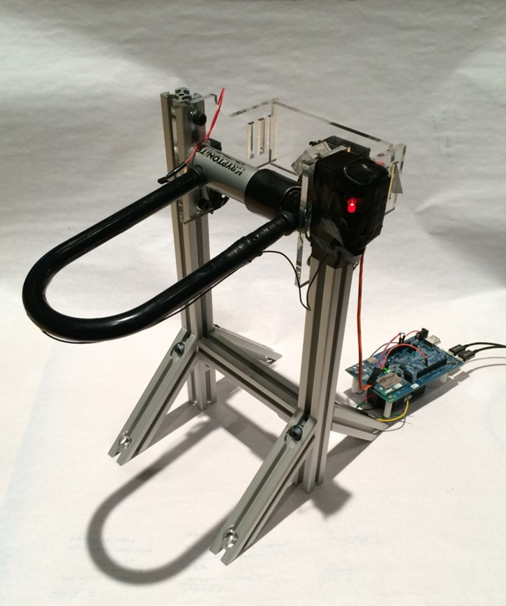

Team WeLock
Bike locks are heavy, cumbersome, and riders often lose their keys.
YouLock is a fixed locking mechanism installed on bike racks that allows
bikers to lock, unlock, and find their bike. It uses the Intel Edison and
Twilio SMS to pair a phone number with a rack and trigger the locking
mechanism with a mechanical servo. It includes a security feature that
notifies you when your bike is being tampered with. Say goodbye to annoying
locks for good!